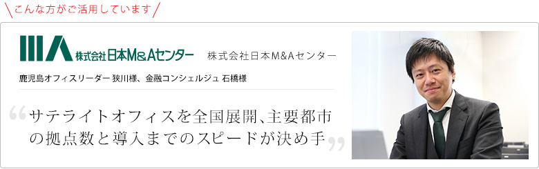
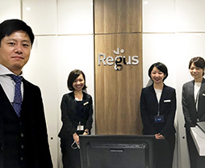

お客様の声
ご利用事例

企業紹介
中堅・中小企業の友好的M&A支援で実績No.1のM&A仲介会社、日本M&Aセンター社に、レンタルオフィスのリージャスをサテライトオフィスとして採用した背景や使用感についてお伺いしました。
ご利用いただいているセンター :
- オープンオフィス仙台駅前 :
宮城県仙台市青葉区中央4-10-3 仙台キャピタルタワー 2F - オープンオフィス大分 :
大分県大分市府内町3-4-20 大分恒和ビル4F
サテライトオフィスを
全国展開、主要都市の拠点数と
導入までのスピードが決め手に
御社の事業展開について教えてください。
中堅・中小企業の友好的M&Aのご支援をさせていただいているM&A仲介会社です。
日本M&Aセンターの使命は、”M&A業務を通じて企業の「存続と発展」に貢献すること”です。”譲渡企業”と”譲受け企業”、そしてその関係者の方々がWin-Winとなる、ベストの相手とのM&Aの成約をフルサポートします。
専門コンサル400名超体制で、全国の地方銀行9割・信用金庫の8割、880の会計事務所等と国内最大級のネットワークを構築しており、日本全国、殆ど全ての業種でのM&Aを支援しています。
主要なクライアント層としては、後継者不足に伴う企業の存続と承継に関する課題をお持ちの経営者様で、特に地方でこうしたご相談が増えています。
全国的なサテライトオフィス展開に至った
詳細の経緯をお伺いできますでしょうか。
西日本エリアへの営業活動について、大阪支社を拠点に福岡をはじめとした九州エリアへ往訪する形で展開してきました。案件増加に伴う3年前の福岡支店立ち上げを皮切りに、各地方都市での営業拠点としてサテライトオフィスの強化が計画されました。
もちろん、サテライトオフィス開設による費用対効果の改善は目的のうちの一つでしたが、それ以上に顧客目線を重視しました。
後継者がいない、というお悩みの声を吸い上げることが営業活動の入口ですが、窓口が近くにあったほうが相談しやすいという実情を受け、各地域に根付いた営業活動も今後必要だという会社の判断がありました。
これに、新型コロナウィルス感染症の流行も加わり、熊本・鹿児島・大分のサテライトオフィスの開設に至りました。
同じようにサテライトオフィスを開設したいという要望が全国的に他の営業エリアからも上がり、リージャスやオープンオフィスにしたほうが什器も整っており立ち上げが早く、メリットも大きいだろうという判断でした。
サテライトオフィスとしてレンタルオフィス
とリージャスや
オープンオフィスの活用に
至った理由はどういったところでしょうか？
契約から稼働開始までのスピード感です。
とにかく意思決定の早い企業文化で、福岡支社長とは1、2回の話で拠点開設の方向性が決まりました。
そして、翌週には内見に行き、問題なければ、契約予定で月内までに稼働できるように準備してほしい、というくらいのスピード感で依頼を投げまして、その時ご担当者が全て対応してくださいました。
普通に賃貸オフィスを借りた場合、内装準備などで3か月程度かかりますよね。その辺りのスピード感がすごく早かったということがリージャスやオープンオフィスを選んだ理由の一つでもあります。
私個人としては鹿児島の物件選定に関わり、企業体がしっかりしていて鹿児島まで地方展開をしているレンタルオフィス事業者はリージャスグループだけだったということもありますが、全国170拠点の展開がありながら速やかに意思決定がなされ、現場の導入から稼働までスムーズにいったことはリージャスグループ（リージャス、オープンオフィス）の選択がベストと判断したように感じます。
顧客からの評判は上々、
地域密着の営業活動に強くなる
サテライトオフィス開設後、お客様からの
評判や実績への良い影響はありましたか？
数字までは追い切れていませんが、確実に問合せ数は増えていると思います。
金融機関や税理士事務所からの案件紹介が多いのですが、先方からの反応も良く、近くにオフィスができたことで相談しやすくなったといった声も多くいただいています。特にコロナ禍において、県外からの往来は控えてほしいが県内であれば問題ない、と判断される場合も多いです。
オンライン商談も増えたかと思いますが、
オフラインとオンラインは
どのように使い分けていらっしゃいますか？
営業マンだけではなく、専門知識が必要なので弁護士や公認会計士にも面談に同席していただくことは多々ありますが、対応可能人数に限りがあるので全ての面談に出向いていただくことが難しく、案件が増やしにくい現状がありました。そこで、士業の方にはオンライン面談で参加していただくパターンがかなり増えました。
以前だったらオンライン面談を好まないお客様もいましたが、コロナ禍でオンライン面談が普及したことで、対応可能件数が増えつつも専門的なフォローもできるようになりました。
営業的な観点で窓口として地域密着スタイルを
取りつつ、
リソース面はオンラインで
カバーされているということですね。
そうですね、コンサル業だと往訪スタイルが一般的だと思いますが、どこにオフィスを構えているかということはアピールになるので名刺にどう書いてあるかは大事ですね。
東京本社の住所のみですと反応はうすいですが、例えば鹿児島オフィスの住所が書いてあると、鹿児島のどの辺りに立地していて、などといったトークができるので、良いアイスブレイクにはなります。
ネットワークを始めとした
ハード面の強み

実際のご活用状況としてはいかがでしょうか？
かなり出張が多い会社なので、鹿児島オフィスの開設後も、メンバーシップを活用して宮崎や小倉のビジネスラウンジも利用させていただきました。小倉では会議室も借りて、顧客とウェブ面談をしたこともありました。喫茶店でもWi-Fi環境があるので一応オンライン面談はできるようにはなりましたが、話の内容的に外部漏洩ができないので個室環境は必須です。こういった環境が各都市にあることはポイントが高いと思います。
全国的な展開について、
今後の展望を教えてください。
九州においては鹿児島・熊本・大分の3拠点ですので他県にも展開していきたいですし、究極は県内でも距離があるところまで、隅々にわたってきちんとフォローできる体制にはしていきたいと思っています。
- 企業データ株式会社日本M&Aセンター
- 設立：1991年4月25日
- 資本金：25億円
- 業務内容：M&A仲介、企業評価の実施、IPO支援他
- 利用サービス：リージャス、オープンオフィスなど8拠点
- 日本M&Aセンターは、中堅・中小企業の友好的M&Aを支援します。東京本社、大阪支社、名古屋支社、福岡支店、札幌営業所、広島営業所、沖縄営業所の国内7拠点で全国をカバーしています。また、シンガポール、インドネシア駐在員事務所、ベトナム現地法人、マレーシア駐在員事務所を開設し、ASEAN地域をカバーしております。
www.nihon-ma.co.jp/